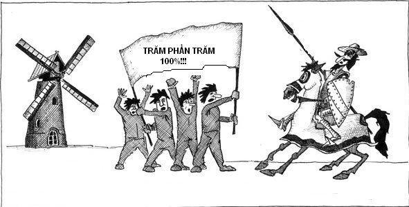

Khẩu hiệu có đem lại hiệu quả giáo dục?

Lần cập nhật cuối lúc Thứ hai, 08 Tháng 10 2012 15:37 Viết bởi Administrator Thứ năm, 20 Tháng 9 2012 15:30
Khẩu hiệu không có tội. Cả thế giới dùng nó, chí ít trong những bối cảnh, giai đoạn nhất định. Nhiều khẩu hiệu được dùng để hô hào đám đông, vì thế dễ nhàm. Vấn đề là khẩu hiệu sẽ được tác động thế nào, được hiểu bởi đối tượng nào của xã hội. Nó có nhất thiết phải có trong thế giới quan của trẻ em không?

Có cả những 'khẩu hiệu' tác dụng trái nghịch
"Lễ trước, văn sau" chẳng hạn, không thấy ló dạng hồi tôi đi học từ giữa những năm 60, nếu có nói đến, chắc là để phê phán. Vào mẫu giáo được dạy ngay thứ tự, trật tự: "1, 2, 3. Ta im lặng. Nghe cô dặn. Chớ hét vang. Đứng thẳng hàng. Thế là tốt". Có thể sức cuốn hút vào tuân thủ pháp luật, kỷ luật đối với một tay "chúa tự do" (như bản thân tôi bị phê bình gần suốt đời) là tôi, hình thành từ đây.
Khi lên đại học thì có nhiều khẩu hiệu, phương châm dành cho sinh viên. Chỉ nhớ tiếp cận hệ thống sau: "(Hãy) Biến chương trình đào tạo của Trường thành quá trình tự đào tạo bản thân". Nếu có cách nào, không nhất thiết qua khẩu hiệu, sớm đạt được điều này thì tốt. Tất nhiên với điều kiện cốt tử là chương trình đào tạo của Trường không sai lầm về phương hướng, không dạy dỗ kiểu cử tử, huấn học (nhồi nhét) như của Nho/Khổng chẳng hạn...
Khẩu hiệu là gì?
Khẩu hiệu có là một thứ chuẩn mực? Nếu là chuẩn mực, nó phải có đủ cả tính lợi ích (người thực hiên có lợi khi theo nó), lẫn tính thuyết phục (để còn khả thi), để tạo sức hút, và ... và tính bắt buộc. Cái "tính" thứ ba này có thể là lý do khiến cho các nhà giáo dục tại các nước phát triển ngần ngại triển khai khẩu hiệu trong môi trường giáo dục dành cho tuổi thơ.
Khẩu hiệu có hàm lượng giáo dục không? Chắc chắn là có. Nhưng nó có thể có hiệu quả như đèn xanh, đèn đỏ, vốn mạnh hơn khẩu hiệu vì có tác dụng cưỡng chế? Ở Việt Nam, hiện vẫn có nhiều kẻ ở lứa tuổi mà "Tiên học lễ" vừa được áp vào, cứ thấy đèn đỏ là đi, thấy đèn xanh thì dừng lại, vì giật mình nhìn thấy CSGT đứng ở bên kia đường...
Tệ hơn, "khẩu hiệu" liệu có phải là một niềm hy vọng vào một phong cách "chữa mẹo", xuất phát từ hy vọng dùng một thứ "thuốc bắc", "thuốc tiên" nào đó chữa khỏi trong nháy mắt một căn bệnh trầm kha, đã di căn từ lâu lắm, thỉnh thoảng bộc phát. Hay chí ít, nó cũng làm được việc của một số thứ kháng sinh, chặn bệnh lại, trùm vào "chăn", rồi hết nhiệm kỳ của "Tôi", bệnh cũ lại tái ngộ với chúng ta?
Khẩu hiệu chắc chỉ có thể là phương tiện, không thể là mục đích.
Khẩu hiệu và Đạo lý
Như mọi phương tiện, khẩu hiệu dù "hay", nếu mất thời gian tính, lệch pha với thời đại, nó sẽ trở thành cứng nhắc. Các nhà giáo dục học của một nước phát triển sẽ ngại "nhét" vào đầu trẻ em cái gì khuôn sáo, lại càng không muốn rập học sinh theo một khuôn (stereotype) nào đó. Họ chắc ngại giáo điều sẽ tạo nên các biến thái kiểu "Tiên học lờ, hậu học vờ" cho một xã hội của các giá trị giả. Xưa nay giáo điều và đạo đức giả vẫn là "anh em một nhà".
Giáo dục phải là môi trường "động", sáng tạo, tiến bộ, hiện đại, không thể là một cửa hàng đồ cổ.
Các phương tiện giáo dục về đạo lý rất quan trọng, nó giúp duy trì lương tâm, xây dựng các giá trị tinh thần, kiểu "có công mài sắt có ngày nên kim"...
Nhưng toàn bộ triết lý Khổng/Nho như tuột qua tôi (và không chỉ tôi) theo kiểu nước đổ đầu vịt, trong khi chỉ một khẩu hiệu của Việt Nam lại nhớ như in: "Thương người như thể thương thân". Nhưng lương tâm của từng người chưa đủ, cần "lương tâm" của cả cộng đồng...
Trong môi trường pháp luật thượng tôn, khi các véc tơ, dù nhỏ, có thể "vô hướng" theo nghĩa được tự do tư tưởng như giá trị cao nhất của quyền con người, nhưng (những véc tơ này) chỉ biến thiên về cường độ và hướng trong một hệ quy chiếu mà loài người công nhận không bàn cãi: đó là khuôn khổ của pháp luật, của kỷ luật như kiểu Quy chế cư xử (của thầy, của trò) trong trường ở nhiều nước...
Có nên phân tích "vì sao các nước phát triển không có khẩu hiệu"? Hơi khó, vì ta chỉ có thể dùng phương pháp luận để xem xét cái đang có, khó mà xem xét cái không có. Chắc là nên xem xét khẩu hiệu (dành cho người lớn): " (Hãy) Cải cách toàn hệ thống Giáo dục Việt Nam" thì hơn?
Theo Vietnamnet.vn
- 29/11/2013 09:41 - Hoạt động của câu lạc bộ Tiếng Anh
- 04/09/2013 07:00 - Tuyên dương khen thưởng học sinh đỗ thủ khoa và đạ…
- 02/04/2013 09:37 - GIẢI THỂ THAO HỌC SINH TRƯỜNG THPT CHUYÊN NGUYỄN …
- 26/12/2012 09:24 - Triển khai công tác giáo dục An toàn giao thông, t…
- 31/10/2012 18:15 - Công đoàn trường tổ chức sinh hoạt giao lưu kỉ niệ…
- 24/08/2011 00:00 - Học sinh Trần Lê Phương, trường THPT chuyên Nguyễn…